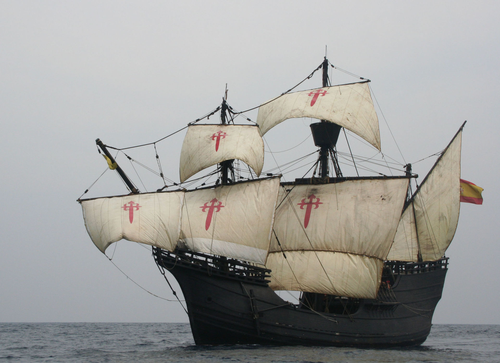
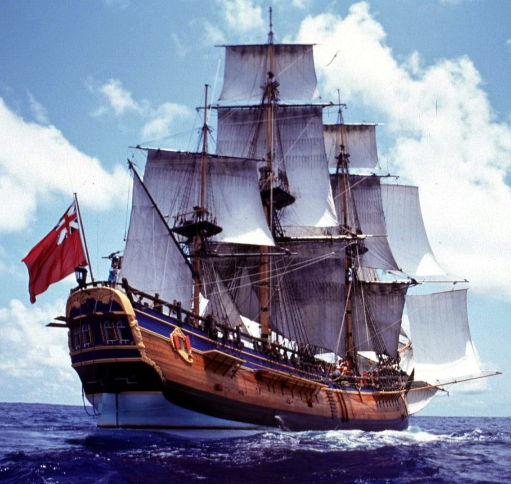

Navegando a través del Tiempo: Historia y Tecnología Marítima
n el vasto lienzo de la historia humana, la relación con los océanos ha sido tanto una epopeya como una necesidad. Desde los albores de la civilización, los barcos han desempeñado un papel esencial en la forma en que exploramos el mundo, comerciamos entre continentes y nos enfrentamos a desafíos titánicos en las aguas impredecibles que rodean nuestras tierras. "Navegando a través del Tiempo: Historia y Tecnología Marítima" invita a los visitantes a una inmersión profunda en esta narrativa en constante evolución, explorando la evolución de los barcos y la ingeniería náutica desde sus modestos orígenes hasta las imponentes maravillas tecnológicas de la actualidad.
La historia de los barcos es intrínseca a la historia misma de la humanidad. Desde las primitivas balsas que se aventuraban en ríos y mares, hasta los complejos navíos de exploración que desafiaron los límites conocidos, cada barco es un testamento a la audacia y la necesidad inherente de explorar lo desconocido. Esta primera sección es un paseo a través de los capítulos iniciales de la historia marítima, donde la madera y las velas marcaron el inicio de un viaje que cambiaría para siempre la faz de la Tierra.

La travesía continúa con un examen detallado de cómo la navegación ha evolucionado a lo largo de los siglos. Desde la habilidad intrépida de los navegantes polinesios hasta la audacia de los exploradores europeos, se explorarán los momentos decisivos que ampliaron los horizontes del conocimiento humano. Embarcaciones icónicas como la carabela portuguesa y la carraca española se presentan como protagonistas de una historia que llevó al descubrimiento de nuevos continentes y rutas comerciales, definiendo así las bases de la globalización incipiente.
La tercera sección nos sumerge en el fascinante mundo de la ingeniería náutica. Desde los astilleros donde se daban forma a las maderas hasta los diques secos donde se erigían imponentes buques de guerra, exploraremos la evolución técnica que ha llevado a la creación de embarcaciones cada vez más avanzadas. La revolución industrial marca un hito crucial, introduciendo maquinaria y acero en la ecuación, transformando los barcos de simples vehículos de navegación a máquinas complejas y poderosas.